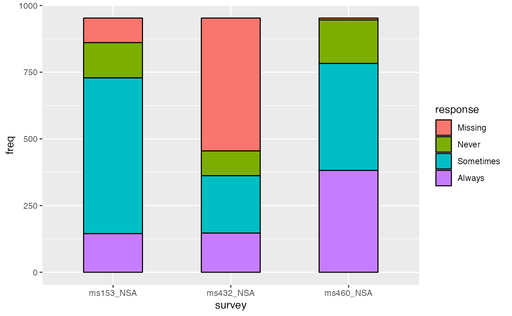
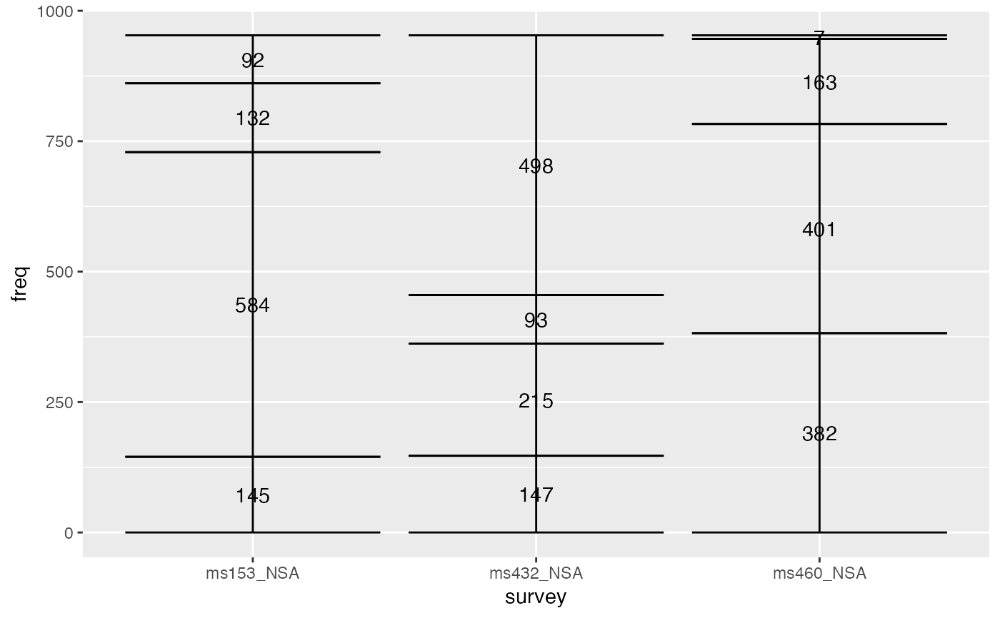
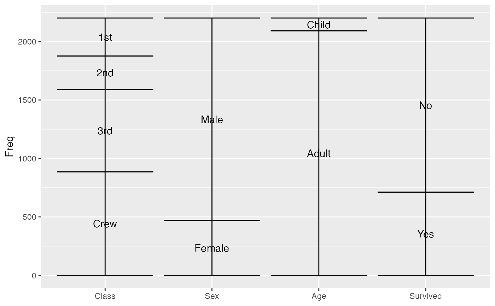
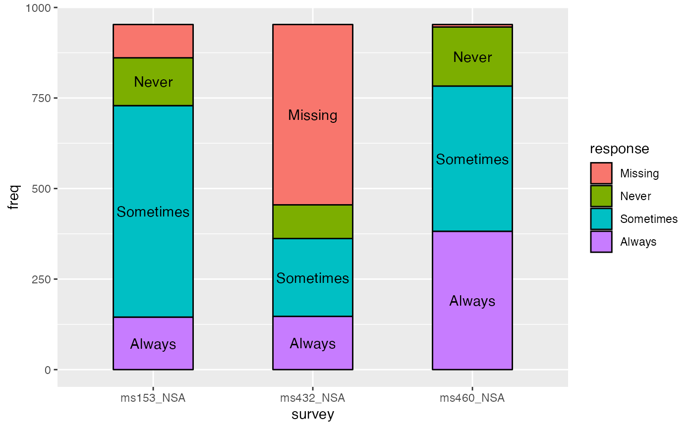
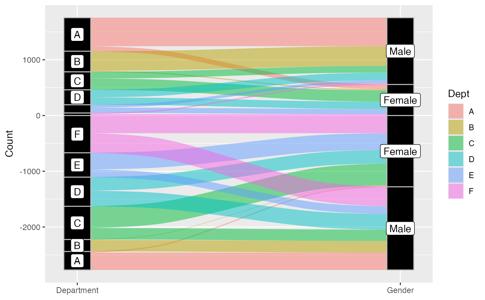
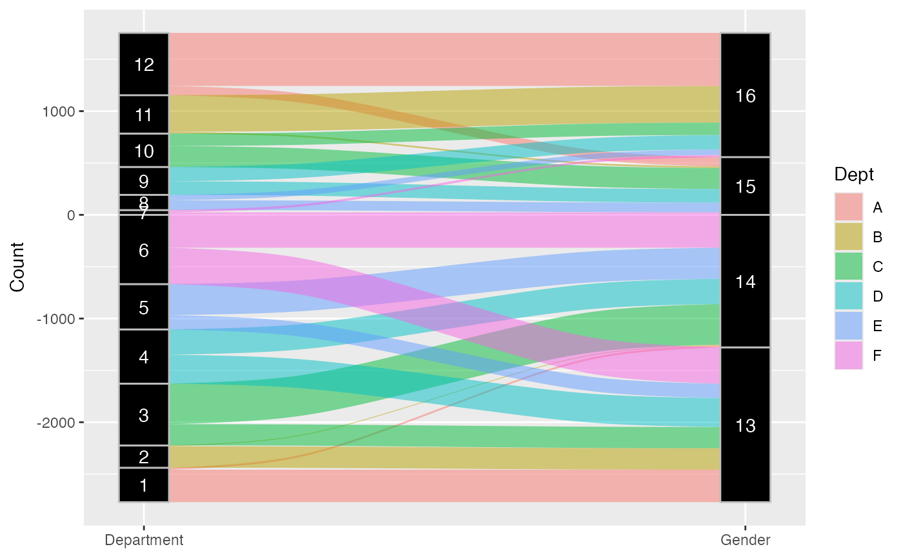
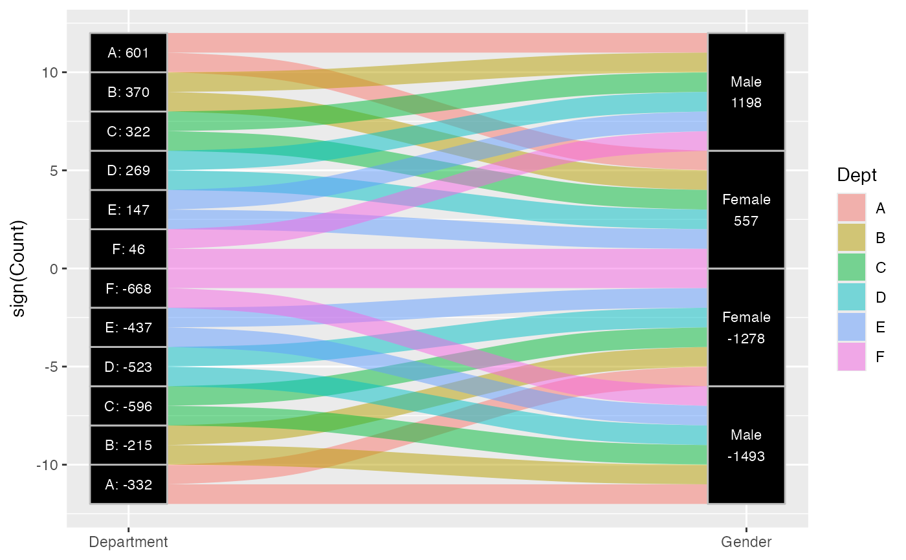

Given a dataset with alluvial structure, stat_stratum calculates the
centroids (x and y) and heights (ymin and ymax) of the strata at each
axis.
stat_stratum(
mapping = NULL,
data = NULL,
geom = "stratum",
position = "identity",
decreasing = NULL,
reverse = NULL,
absolute = NULL,
discern = FALSE,
distill = first,
negate.strata = NULL,
infer.label = FALSE,
label.strata = NULL,
min.y = NULL,
max.y = NULL,
min.height = NULL,
max.height = NULL,
na.rm = FALSE,
show.legend = NA,
inherit.aes = TRUE,
...
)Set of aesthetic mappings created by aes(). If specified and
inherit.aes = TRUE (the default), it is combined with the default mapping
at the top level of the plot. You must supply mapping if there is no plot
mapping.
The data to be displayed in this layer. There are three options:
If NULL, the default, the data is inherited from the plot
data as specified in the call to ggplot().
A data.frame, or other object, will override the plot
data. All objects will be fortified to produce a data frame. See
fortify() for which variables will be created.
A function will be called with a single argument,
the plot data. The return value must be a data.frame, and
will be used as the layer data. A function can be created
from a formula (e.g. ~ head(.x, 10)).
The geometric object to use display the data; override the default.
Position adjustment, either as a string naming the adjustment
(e.g. "jitter" to use position_jitter), or the result of a call to a
position adjustment function. Use the latter if you need to change the
settings of the adjustment.
Logical; whether to arrange the strata at each axis
in the order of the variable values (NA, the default),
in ascending order of totals (largest on top, FALSE), or
in descending order of totals (largest on bottom, TRUE).
Logical; if decreasing is NA,
whether to arrange the strata at each axis
in the reverse order of the variable values,
so that they match the order of the values in the legend.
Ignored if decreasing is not NA.
Defaults to TRUE.
Logical; if some cases or strata are negative,
whether to arrange them (respecting decreasing and reverse)
using negative or absolute values of y.
Passed to to_lodes_form() if data is in
alluvia format.
A function (or its name) to be used to distill alluvium values
to a single lode label, accessible via
ggplot2::after_stat() (similar to its behavior in
to_alluvia_form()). In addition to existing functions, accepts the
character values "first" (the default), "last", and "most" (which
returns the first modal value).
A vector of values of the stratum aesthetic to be
treated as negative (will ignore missing values with a warning).
Logical; whether to assign the stratum or alluvium
variable to the label aesthetic. Defaults to FALSE, and requires that
no label aesthetic is assigned. This parameter is intended for use only
with data in alluva form, which are converted to lode form before the
statistical transformation. Deprecated; use
ggplot2::after_stat() instead.
Defunct; alias for infer.label.
Numeric; bounds on the heights of the strata to be
rendered. Use these bounds to exclude strata outside a certain range, for
example when labeling strata using ggplot2::geom_text().
Deprecated aliases for min.y and max.y.
Logical:
if FALSE, the default, NA lodes are not included;
if TRUE, NA lodes constitute a separate category,
plotted in grey (regardless of the color scheme).
logical. Should this layer be included in the legends?
NA, the default, includes if any aesthetics are mapped.
FALSE never includes, and TRUE always includes.
It can also be a named logical vector to finely select the aesthetics to
display.
If FALSE, overrides the default aesthetics,
rather than combining with them. This is most useful for helper functions
that define both data and aesthetics and shouldn't inherit behaviour from
the default plot specification, e.g. borders().
Additional arguments passed to ggplot2::layer().
stat_alluvium, stat_flow, and stat_stratum require one
of two sets of aesthetics:
x and at least one of alluvium and stratum
any number of axis[0-9]* (axis1, axis2, etc.)
Use x, alluvium, and/or stratum for data in lodes format
and axis[0-9]* for data in alluvia format (see alluvial-data).
Arguments to parameters inconsistent with the format will be ignored.
Additionally, each stat_*() accepts the following optional
aesthetics:
y
weight
order
group
label
y controls the heights of the alluvia,
and may be aggregated across equivalent observations.
weight applies to the computed variables (see that section below)
but does not affect the positional aesthetics.
order, recognized by stat_alluvium() and stat_flow(), is used to
arrange the lodes within each stratum. It tolerates duplicates and takes
precedence over the differentiation aesthetics (when aes.bind is not
"none") and lode guidance with respect to the remaining axes. (It replaces
the deprecated parameter lode.ordering.)
group is used internally; arguments are ignored.
label is used to label the strata or lodes and must take a unique value
across the observations within each stratum or lode.
These and any other aesthetics are aggregated as follows:
Numeric aesthetics, including y, are summed.
Character and factor aesthetics, including label,
are assigned to strata or lodes provided they take unique values across the
observations within each (and are otherwise assigned NA).
These can be used with
ggplot2::after_stat() to control aesthetic evaluation.
nnumber of cases in lode
countcumulative weight of lode
propweighted proportion of lode
stratumvalue of variable used to define strata
depositorder in which (signed) strata are deposited
lodelode label distilled from alluvia
(stat_alluvium() and stat_flow() only)
flowdirection of flow "to" or "from" from its axis
(stat_flow() only)
The numerical variables n, count, and prop are calculated after the
data are grouped by x and weighted by weight (in addition to y).
The integer variable deposit is used internally to sort the data before
calculating heights. The character variable lode is obtained from
alluvium according to distill.
stat_stratum, stat_alluvium, and stat_flow order strata and lodes
according to the values of several parameters, which must be held fixed
across every layer in an alluvial plot. These package-specific options set
global values for these parameters that will be defaulted to when not
manually set:
ggalluvial.decreasing (each stat_*): defaults to NA.
ggalluvial.reverse (each stat_*): defaults to TRUE.
ggalluvial.absolute (each stat_*): defaults to TRUE.
ggalluvial.cement.alluvia (stat_alluvium): defaults to FALSE.
ggalluvial.lode.guidance (stat_alluvium): defaults to "zigzag".
ggalluvial.aes.bind (stat_alluvium and stat_flow): defaults to
"none".
See base::options() for how to use options.
The previously defunct parameters weight and aggregate.wts have been
discontinued. Use y and cement.alluvia instead.
ggplot2::layer() for additional arguments and
geom_stratum() for the corresponding geom.
Other alluvial stat layers:
stat_alluvium(),
stat_flow()
data(vaccinations)
# only `stratum` assignment is necessary to generate strata
ggplot(vaccinations,
aes(y = freq,
x = survey, stratum = response,
fill = response)) +
stat_stratum(width = .5)

# lode data, positioning with y labels
ggplot(vaccinations,
aes(y = freq,
x = survey, stratum = response, alluvium = subject,
label = after_stat(count))) +
stat_stratum(geom = "errorbar") +
geom_text(stat = "stratum")

# alluvium data, positioning with stratum labels
ggplot(as.data.frame(Titanic),
aes(y = Freq,
axis1 = Class, axis2 = Sex, axis3 = Age, axis4 = Survived)) +
geom_text(stat = "stratum", aes(label = after_stat(stratum))) +
stat_stratum(geom = "errorbar") +
scale_x_discrete(limits = c("Class", "Sex", "Age", "Survived"))

# omit labels for strata outside a y range
ggplot(vaccinations,
aes(y = freq,
x = survey, stratum = response,
fill = response, label = response)) +
stat_stratum(width = .5) +
geom_text(stat = "stratum", min.y = 100)

# date-valued axis variables
ggplot(vaccinations,
aes(x = end_date, y = freq, stratum = response, alluvium = subject,
fill = response)) +
stat_alluvium(geom = "flow", lode.guidance = "forward",
width = 30) +
stat_stratum(width = 30) +
labs(x = "Survey date", y = "Number of respondents")
admissions <- as.data.frame(UCBAdmissions)
admissions <- transform(admissions, Count = Freq * (-1) ^ (Admit == "Rejected"))
# use negative y values to encode rejection versus acceptance
ggplot(admissions,
aes(y = Count, axis1 = Dept, axis2 = Gender)) +
geom_alluvium(aes(fill = Dept), width = 1/12) +
geom_stratum(width = 1/12, fill = "black", color = "grey") +
geom_label(stat = "stratum", aes(label = after_stat(stratum)), min.y = 200) +
scale_x_discrete(limits = c("Department", "Gender"), expand = c(.05, .05))

# computed variable 'deposit' indicates order of each signed stratum
ggplot(admissions,
aes(y = Count, axis1 = Dept, axis2 = Gender)) +
geom_alluvium(aes(fill = Dept), width = 1/12) +
geom_stratum(width = 1/12, fill = "black", color = "grey") +
geom_text(stat = "stratum", aes(label = after_stat(deposit)),
color = "white") +
scale_x_discrete(limits = c("Department", "Gender"), expand = c(.05, .05))

# fixed-width strata with acceptance and rejection totals
ggplot(admissions,
aes(y = sign(Count), weight = Count, axis1 = Dept, axis2 = Gender)) +
geom_alluvium(aes(fill = Dept), width = 1/8) +
geom_stratum(width = 1/8, fill = "black", color = "grey") +
geom_text(stat = "stratum",
aes(label = paste0(stratum,
ifelse(nchar(as.character(stratum)) == 1L,
": ", "\n"),
after_stat(n))),
color = "white", size = 3) +
scale_x_discrete(limits = c("Department", "Gender"), expand = c(.05, .05))
